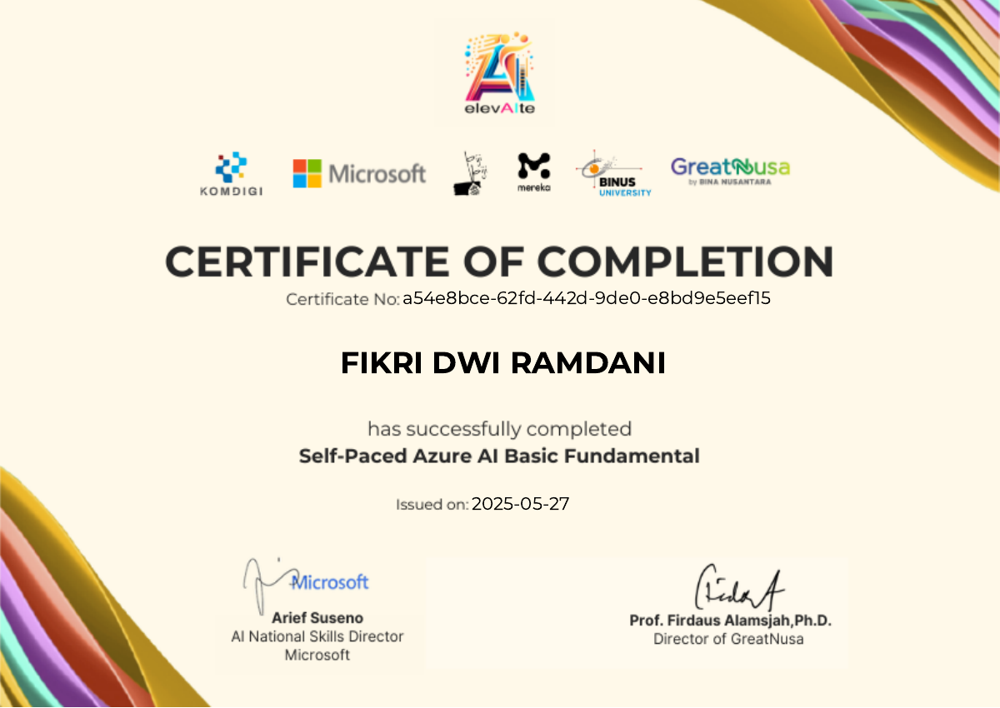

UI/UX Design
Understanding user needs and shaping clear interfaces and intuitive booking flows.
Business Information Technology student at BINUS University.
Interested in UI/UX Design, Web Development, and Data Analytics.
Exploring people, products & data.
Turning curiosity into practical learning.
I’m Fikri, a Business Information Technology student at BINUS University with a GPA of 3.34/4.00. I’m interested in UI/UX Design, Web Development, and Data Analytics, and how user needs, business goals, and data can inform useful digital products.
In the WCin team project, I helped develop a business concept and website prototype, define key features, and improve the booking flow. In a crop recommendation project, I helped explore data, create visualizations, and compare model evaluation results. I also contributed across all stages of a retail data modeling and sales dashboard project using Excel, Power Query, and Power Pivot.
Beyond academic projects, I coordinate members and carry out court duties in UKM Voly BINUS. Teaching SDG 2 material and participating in team competitions have also helped me develop communication, teamwork, and responsibility.
I’m seeking an internship where I can contribute to real projects, learn from experienced professionals, and develop my design, technical, and analytical skills.
Open to internship opportunities
Understanding user needs and shaping clear interfaces and intuitive booking flows.
Exploring data to find patterns and support business decisions.
Growing my ability to turn digital product ideas into usable web experiences.
Skills applied through academic projects and campus activities.
User Needs Identification · User Flow Design · Prototyping · Prototype Testing
Applied in WCin ↗Data Cleaning · Data Visualization · Star Schema Modeling · Interactive Dashboards · Basic Machine Learning
Applied in team projects ↗Figma · Canva · Microsoft Excel · Power Query · Power Pivot · Python · Google Colab
Teamwork · Communication · Public Speaking · Team Coordination · Report Writing
Applied beyond class ↗A digital marketplace concept for sanitation services.
Academic prototype. Customer counts, ratings, and service claims shown in the interface are illustrative.
Finding sanitation services can involve unclear pricing, manual booking, and uncertainty about service quality.
Developed a business concept and website prototype connecting customers with service partners. Proposed features include transparent estimates, booking, order tracking, and maintenance reminders.
Business report, user personas, empathy map, value proposition canvas, market positioning, and a website prototype.
Contributed to developing the WCin business concept and website prototype as part of a team. Helped identify user needs, define key features, and design an easy-to-follow booking flow. Also tested the prototype and provided feedback to improve navigation and information presentation.
Supporting crop selection to help reduce harvest failure risk.
Recommend suitable crops from soil nutrients and environmental conditions. The model predicts crop type, not the probability of harvest failure.
Compared Logistic Regression, Decision Tree, and Random Forest using seven input features. The report describes preprocessing, an 80:20 split, and stratified cross-validation.
Random Forest achieved the highest reported validation accuracy of 99.32%, compared with 97.95% for Decision Tree and 97.27% for Logistic Regression.
Contributed to a team project on machine learning-based crop recommendation. Helped explore soil and environmental data and create visualizations to understand patterns in the dataset. Also assisted in comparing model evaluation results and summarizing the findings in the team report.
Results from the team’s academic report, not independently reproduced or validated in field conditions.
Connecting structured data with business questions.
Project documentation from the team’s academic report. Screenshots are static records of the original workbook.
Model retail sales data and make sales indicators easier to explore, including total sales, transaction counts, average order value, and category performance.
Cleaned and prepared data, organized a star schema, connected transaction and dimension tables, and built measures and dashboard views with PivotTables, PivotCharts, and slicers.
The dashboard presents sales summaries and category comparisons. The team report identified Sports & Outdoors among the categories with the highest total sales.
Contributed across all project stages, from data preparation and cleaning to building table relationships, measures, and an interactive dashboard. Used Microsoft Excel, Power Query, and Power Pivot to process data and present results through PivotTables, PivotCharts, and slicers. Also analyzed sales performance and contributed to the team’s final report.
Lessons from teaching,
teamwork, and competition.
Delivered SDG 2: Zero Hunger material to 19 junior high school students at Sekolah Cikal Amri. Discussed global hunger, food waste, and individual actions to support food security.
The group program included presentations, Q&A, and poster activities.
Represented BINUS Bekasi in the 2024 and 2025 volleyball competitions.
Collaborated with fellow members to coordinate participants and support club activities. Fulfilled assigned court duties and helped maintain safety and order during training, strengthening teamwork, communication, and responsibility.
Participated in a BINUS University industry visit to gain firsthand exposure to automotive production. Through a guided facility tour and explanations from Hyundai representatives, learned about production stages and the functions of manufacturing equipment.
This experience broadened my understanding of how technology, workflows, and operations connect within the automotive industry.
Attended the business exhibition and interviewed exhibitors about their business ideas, target markets, and business challenges. This activity broadened my understanding of business concept development and customer needs while strengthening my questioning, active listening, and firsthand information-gathering skills.
2024 — PRESENT
Business Information Technology
Microsoft × GreatNusa · elevAIte
Completed independent learning in foundational artificial intelligence, supporting my interest in data analytics and digital product development. This course reflects my initiative to build technology knowledge beyond university coursework.
View completion certificate ↗
Interested in internship opportunities in UI/UX Design,
Web Development, and Data Analytics.